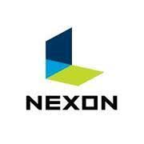

회사소개
주식회사 넥슨(株式会社ネクソン, NEXON Co., Ltd.)은 대한민국에서 가장 큰 비디오 게임 회사 중 하나입니다. 유명한 넥슨의 온라인 비디오 게임으로는 바람의나라, 바람의나라:연, FC 온라인, FC 모바일, 메이플스토리, 크레이지 아케이드BnB, 카트라이더: 드리프트, 블루 아카이브, 서든어택, 카트라이더 러쉬+ 등이 있어요. 모기업은 대한민국의 NXC이다. 2005년,이 회사는 일본 도쿄에 본사를 옮겼습니다.
주식회사 넥슨(株式会社ネクソン, NEXON Co., Ltd.)은 대한민국에서 가장 큰 비디오 게임 회사 중 하나입니다. 유명한 넥슨의 온라인 비디오 게임으로는 바람의나라, 바람의나라:연, FC 온라인, FC 모바일, 메이플스토리, 크레이지 아케이드BnB, 카트라이더: 드리프트, 블루 아카이브, 서든어택, 카트라이더 러쉬+ 등이 있어요. 모기업은 대한민국의 NXC이다. 2005년,이 회사는 일본 도쿄에 본사를 옮겼습니다.